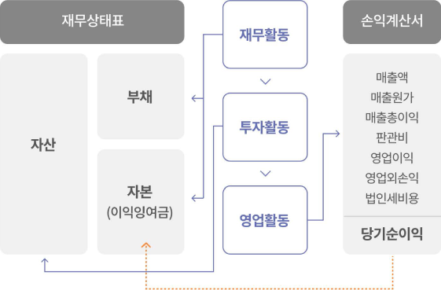

고객 대시 보드
Check Point
기업개요
기업일반
기준일 2023.08.22
| 기업명 | 이오에프씨 주식회사(25FC CO., LTD.) | 설립일자 | 2019.06.11 |
|---|---|---|---|
| 대표자명 | 이설욱/대표이사 | 대표이사 생년월일(나이) | 1976.02.**(만47세) |
| 기업형태 | 일반법인 | 결산월 | 12월 |
| 상시근로자수 | 1명 | ||
| 업종 | (M71531)경영 컨설팅업 | ||
| 주소(도로명) | 부산광역시 해운대구 센텀5로 55, 401호(우동, 센텀큐) | ||
| 기업인증현황 | |||
| 산업재산권현황 | |||
데이터 출처: 법인등기부등본, 근로복지공단
자본금 및 주식 발행사항
| 자본금 | 발행주식 합계 | 보통주 | 우선주 | 상환전환우선주 | 1주의 금액 |
|---|---|---|---|---|---|
| 300,000,000원 | 60,000주 | 60,000주 | - | - | 5,000원 |
데이터 출처: 법인등기부등본
주요 사업목적
| 사업목적 |
|
|---|
데이터 출처: 법인등기부등본
Check Point
주주 및 임원 확인사항
- 1) 대표이사와 주주와의 관계
- 2) 차명주주 여부
- 3) 가족 임원 여부
- 4) 대표이사 취임일(근속/경영기간 파악)
- 5) 임원 (재)선임일(다음 등기시점 파악)
주주 및 임원
주요 주주현황
기준일 2023.08.01
| 주요주주 | 주식수 | 지분율 | 주식종류 | 경영실권자와의 관계 | 회사와의 관계 | 차명주주 여부 |
|---|---|---|---|---|---|---|
| 이성욱 | 29,400주 | 49% | 보통주 | 본인 | 대표이사 | |
| 신승환 | 15,000주 | 25% | 보통주 | 본인 | 임원 | |
| 안용규 | 3,600주 | 6% | 보통주 | 본인 | 임원 | |
| 배상수 | 12,000주 | 20% | 보통주 | 본인 | 임원 |
데이터 출처: 직접입력 정보
임원 현황
기준일 2023.08.22
| 직위 | 성명 | 나이 | 관계 | 취임일 | 재선임일 | 최근 등기일 | 다음 재선임일 |
|---|---|---|---|---|---|---|---|
| 대표이사 | 이성욱 | 47세 | 본인 | 2019.06.11 | 2022.07.22 | 2022.07.27 | 2025.07.22 |
| 사내이사 | 신승환 | 43세 | 기타 | 2021.02.25 | 2022.07.22 | 2022.07.27 | 2025.07.22 |
| 사내이사 | 배상수 | 48세 | 기타 | 2021.02.25 | 2022.07.22 | 2022.07.27 | 2025.07.22 |
| 감사 | 손재석 | 48세 | 기타 | 2022.07.22 | 2025.03.31 |
데이터 출처: 법인등기부등본
Check Point
업종평균 재무비율 정보
(M 전문, 과학 및 기술 서비스업)
업종평균 재무비율은 한국은행 통계 「2022년 기업경영분석지표」 데이터를 자동으로 가져옵니다.
업종평균 재무비율은 한국은행 통계 「2022년 기업경영분석지표」 데이터를 자동으로 가져옵니다.
재무비율 분석 평가 기준
해당업체의 재무비율이 업종평균 이상인지, 이하인지 우선 비교하고,
일반적인 중소 기업의 과거 경험 비율에 근거한 표준비율 대비
"우수","양호","위험" 여부를 최종적으로 확인합니다.
자본완전잠식법인
자본완전잠식법인의 경우 부채비율과 차입금의존도 비율이
마이너스값으로 표시됩니다.
재무비율 분석 (1)
안정성 지표
| 재무비율 | 평가 | 해당업체 | 업종평균 |
|---|---|---|---|
| 부채비율 | -425.7% | 127.4% | |
| 표준비율 | 200% 이하 우수 | ||
| 600% 이상 위험 | |||
| 차입금의존도 | -247.8% | 35.0% | |
| 표준비율 | 30% 이하 우수 | ||
| 60% 이상 위험 | |||
| 유동비율 | 60.4% | 139.3% | |
| 표준비율 | 100% 이상 우수 | ||
| 50% 이하 위험 | |||
| 이자보상비율 | 2.2배 | 4.4배 | |
| 표준비율 | 3배 이상 우수 | ||
| 1배 이하 위험 | |||
기업이 재무구조를 건실하게 유지한다는 것은 부채를 적정하게 사용한다는 의미입니다. 안정성 지표는
기업의 기초체력인 안정성과 유동성을 측정하는데 이용되며, 채무변제능력을
판단하는 중요한 기준이됩니다.
수익성 지료
| 재무비율 | 평가 | 해당업체 | 업종평균 |
|---|---|---|---|
| 매출순이익률 | 11.5% | 8.0% | |
| 표준비율 | 7% 이상 우수 | ||
| 2% 이하 위험 | |||
| 매출영업이익률 | 10.8% | 6.8% | |
| 표준비율 | 20% 이상 우수 | ||
| 5% 이하 위험 | |||
| 총자산순이익률 (ROA) |
23.2% | 5.4% | |
| 표준비율 | 9% 이상 우수 | ||
| 3% 이하 위험 | |||
| 자기자본순이익률 (ROE) |
-43.2% | 12.1% | |
| 표준비율 | 20% 이상 우수 | ||
| 10% 이하 위험 | |||
기업의 수익성은 기업 발전의 가장 중요한 원동력입니다. 매출수익성이 마진이라면 자본수익성은 투자수익률을 의미합니다. ROE가 정기예금 이자율에도 못 미친다면, 기업경영 자체에 대한 근본적인 사업 타당성 검토가 필요합니다.
※ 해당기업의 재무정보를 바탕으로 재무비율을 계산하고, 업종평균비율 및 표준비율과 비교 분석하였습니다.
Check Point
업종평균 재무비율 정보
(M 전문, 과학 및 기술 서비스업)
업종평균 재무비율은 한국은행 통계 「2022년 기업경영분석지표」 데이터를 자동으로 가져옵니다.
업종평균 재무비율은 한국은행 통계 「2022년 기업경영분석지표」 데이터를 자동으로 가져옵니다.
재무비율 분석 평가 기준
해당업체의 재무비율이 업종평균 이상인지, 이하인지 우선 비교하고,
일반적인 중소 기업의 과거 경험 비율에 근거한 표준비율 대비
"우수","양호","위험" 여부를 최종적으로 확인합니다.
재무비율 분석 (2)
성장성 지표
| 재무비율 | 평가 | 해당업체 | 업종평균 |
|---|---|---|---|
| 총자산증가율 | -7.1% | 27.3% | |
| 표준비율 | 20% 이상 우수 | ||
| 10% 이하 위험 | |||
| 자기자본증가율 | -62.0% | 23.4% | |
| 표준비율 | 20% 이상 우수 | ||
| 10% 이하 위험 | |||
| 유동자산증가율 | -9.4% | 28.9% | |
| 표준비율 | 20% 이상 우수 | ||
| 10% 이하 위험 | |||
| 매출액증가율 | 87.5% | 21.9% | |
| 표준비율 | 20% 이상 우수 | ||
| 5% 이하 위험 | |||
성장성 지표는 기업의 당해년도 경영규모 및 선과가 전년도에 비하여
얼마나 증가 하였는지를 보여줍니다. 아울러 기업의 경쟁력이나 미래수익 창출능력을 간접적으로 나타내는 지표입니다.
활동성 지표
| 재무비율 | 평가 | 해당업체 | 업종평균 |
|---|---|---|---|
| 총자산회전율 | 2.0회전 | 0.7회전 | |
| 표준비율 | 1.5회 이상 우수 | ||
| 1회 이하 위험 | |||
| 재고자산회전율 | 63.5회전 | 20.0회전 | |
| 표준비율 | 6회 이상 우수 | ||
| 4회 이하 위험 | |||
| 매입채무회전율 | 5.8회전 | 35.8회전 | |
| 표준비율 | 8회 이상 우수 | ||
| 6회 이하 위험 | |||
| 매출채권회전율 | 7.0회전 | 9.4회전 | |
| 표준비율 | 6회 이상 우수 | ||
| 3회 이하 위험 | |||
활동성 지표는 매출을 올리는데 있어 기업이 자원을 얼마나 효율적으로 이용하였는지와 소요 운영자금의 규모를 보여줍니다. 회전율이 높을수록 현금화 속도는 빠르고, 지급능력도 우수함을 의미합니다.
※ 해당기업의 재무정보를 바탕으로 재무비율을 계산하고, 업종평균비율 및 표준비율과 비교 분석하였습니다.
Check Point
재무상태표 체크사항
- ① 현금 유동성 수준
- ② 대표이사 가지급금 유무
- ③ 법인보험계약 자산처리 계정
- ④ 직전 5년 법인전환(기업인수) 기업
- ⑤ 특허권 평가시 사후관리
- ⑥ 은행대출 등 단기차입금 규모
- ⑦ 대표이사 가수금 규모
- ⑧ 퇴직연금 도입여부
- ⑨ 유상증자(투자유치) 이력
- ⑩ 자기주식 보유현황
- ⑪ 유상감자 이력
- ⑫ 과거 배당이력
- ⑬ 미처분이익잉여금 규모
자본완전잠식법인
해당법인은 자본완전잠식법인입니다. 자본잠식을 해결하기 위한 방안으로
유상증자를 검토해 볼 수 있습니다. 또한 자산재평가가 가능한 고정자산이
있는 경우 재평가적립금을 자본으로 전입(무상증자)할 수 있습니다.
요약 재무상태표
(단위:천원)
| 자산 | 2020년 | 2021년 | 2022년 |
|---|---|---|---|
| 자산 | 717,289 | 1,196,816 | 1,111,407 |
| 유동자산 | 79,135 | 548,012 | 496,753 |
| 당좌자산 | 60,659 | 511,586 | 459,780 |
| 현금및금융상품① | 5,355 | 9,665 | 7,760 |
| 매출채권 | 14,378 | 423,530 | 242,174 |
| 단기대여금 | - | - | - |
| 가지급금② | - | - | - |
| 미수금 | 25,906 | 69,888 | 144,166 |
| 재고자산 | 18,476 | 36,426 | 36,973 |
| 비유동자산 | 638,154 | 648,803 | 614,654 |
| 투자자산 | 8,279 | 15,478 | 13,807 |
| 장기금융상품③ | - | - | - |
| 기타투자자산 | 8,279 | - | - |
| 유형자산 | 77,135 | 80,885 | 48,406 |
| 토지 | - | - | - |
| 건물 및 부속설비 | - | 64,041 | 69,207 |
| 기계장치 | - | 101,878 | 101,878 |
| 무형자산 | - | - | - |
| 영업권④ | - | - | - |
| 산업재산권⑤ | - | - | - |
| 기타비유동자산 | 552,740 | 552,440 | 552,441 |
(단위:천원)
| 부채 및 자본 | 2020년 | 2021년 | 2022년 |
|---|---|---|---|
| 부채 | 1,293,198 | 2,095,781 | 1,452,610 |
| 유동부채 | 663,198 | 1,465,781 | 822,610 |
| 매입채무 | 66,614 | 858,050 | 221,952 |
| 단기차입금⑥ | 361,832 | 482,313 | 215,636 |
| 가수금⑦ | 361,832 | 482,313 | 215,636 |
| 미지급금 | 61,791 | 200,490 | 169,778 |
| 비유동뷰채 | 630,000 | 630,000 | 630,000 |
| 장기차입금 | 630,000 | 630,000 | 630,000 |
| 퇴직급여충당부채⑧ | - | - | - |
| (퇴직연금운용자산) | - | - | - |
| (퇴직보험예치금) | - | - | - |
| 자본 | (575,909) | (898,965) | (341,203) |
| 자본금 | 10,000 | 10,000 | 300,000 |
| 자본잉여금 | - | - | - |
| 주식발행초과금⑨ | - | - | - |
| 자본조정 | - | - | - |
| 자기주식(-)⑩ | - | - | - |
| 감자차손(-)⑪ | - | - | - |
| 이익잉여금 | (585,909) | (908,964) | (641,203) |
| 이익준비금⑫ | - | - | - |
| 미처분이익잉여금⑬ | (585,909) | (908,964) | (641,203) |
※ 기업의 상세재무제표 정보를 바탕으로 법인 컨설팅 관점에서 중요한 주요 계정을 요약한 재무상태표입니다.
Check Point
손익계산서 체크사항
- ① 인건비 부담액(매출대비 비중)
- ② 급여의 5~10% 수준 권장
- ③ 차량운행일지 작성 여부 확인
- ④ 접대비 한도 3,600만원
- ⑤ 보험료 비용처리 적정성 확인
- ⑥ 임대료 부담액('시설자금' 대출 검토)
- ⑦ 연구전담부서 사후관리
- ⑧ 가지급금 인정이자 부담
- ⑨ 정부지원금(고용지원금) 등
- ⑩ 이자비용 부담
- ⑪ 세감면·세액공제 적용 여부 확인
- ⑫ 기업의 최종 수익성
요약 손익계산서
(단위:천원)
| 손익계정 | 2020년 | 2021년 | 2022년 |
|---|---|---|---|
| 매출액 | 1,656,819 | 1,242,595 | 2,330,467 |
| 매출원가 | 1,005,354 | 782,072 | 1,294,580 |
| 매출총이익(손실) | 560,465 | 460,522 | 1,035,886 |
| 판매비와관리비 | 898,903 | 672,646 | 784,190 |
| 급여① | 323,966 | 246,317 | 246,460 |
| 임원급여 | - | - | - |
| 직원급여 | 257,340 | 246,317 | 246,460 |
| 퇴직급여 | 3,144 | - | - |
| 복리후생비② | 41,918 | 31,198 | 48,599 |
| 차량유지비③ | 21,279 | 11,312 | 16,913 |
| 지급수수료 | 125,768 | 26,526 | 34,401 |
| 광고선전비 | 14,487 | 2,250 | 2,236 |
| 접대비④ | 27,443 | 21,416 | 33,077 |
| 보험료⑤ | 6,204 | 7,804 | 1,409 |
| 임차료⑥ | 143,350 | 131,700 | 140,838 |
| 경상개발비⑦ | - | - | - |
| 영업이익(손실) | (338,438) | (212,123) | (251,696) |
| 영업외수익 | 16 | 19,977 | 137,496 |
| 이자수익⑧ | 16 | 2 | 2 |
| 보험차익 | - | - | - |
| 기타영업외수익⑨ | - | 19,975 | 137,494 |
(단위:천원)
| 손익계정 | 2020년 | 2021년 | 2022년 |
|---|---|---|---|
| 영업외비용 | 114,603 | 113,404 | 113,412 |
| 이자비용⑩ | 113,406 | 113,400 | 113,400 |
| 외환차손 | - | - | - |
| 법인세차감전 순손익 | (453,025) | (305,550) | - |
| 법인세비용⑪ | - | 17,504 | 8,018 |
| 당기순이익⑫ | (453,025) | (323,055) | 267,761 |
기업의 경영활동

※ 기업의 상세재무제표 정보를 바탕으로 법인 컨설팅 관점에서 중요한 주요 계정을 요약한 손익계산서입니다.
Check Point
주요 경비율 분석
주요 경비는 매출원가, 인건비, 임차료로 구성됩니다. 최근 결산 기준 매출액 대비 주요경비율은 72.2% 수준입니다. 매출원가는 작년대비 5.1억원 증가하였고, 인거비는 0.0억원 증가하였습니다. 사업이 성장함에 따라 주요 경비의 증감을 항상 예의 주시 하여야 합니다.
직전3년 주요 경비율 추이
(단위:천원)
| 계정명 | 2020년 | 2021년 | 2022년 |
|---|---|---|---|
| 매출원가 | 1,005,354 | 782,072 | 1,294,580 |
| (매출원가/매출액) | 64.2% | 62.9% | 55.6% |
| 인건비 | 327,110 | 246,317 | 246,460 |
| (인건비/매출액) | 20.9% | 19.8% | 10.6% |
| 임차료 | 143,350 | 131,700 | 140,838 |
| (임차료/매출액) | 9.2% | 10.6% | 6.0% |
| 매출액 | 1,565,819 | 1,242,595 | 2,330,467 |
| 주요경비 합계 | 1,475,814 | 1,160,089 | 1,681,878 |
| 주요경비율 | 94.3% | 93.4% | 72.2% |
매출원가 비중
인건비 비중
임차료 비중
Check Point
투입 노동력
상시근로자수 + 대표이사수
근로복지공단 각 사업연도말 상시근로자수 데이터를 자동으로 가져옵니다.
근로복지공단 각 사업연도말 상시근로자수 데이터를 자동으로 가져옵니다.
인건비 분석
법인의 성장 단계에서 증가했던 인건비 지출은 반대로 법인의 긴축 상황에서 즉각적인 조정이 쉽지 않은 비용입니다. 매년 인당 평균 인건비 및 인당 평균 매출액 증감 추이를 확인하고, 효율적인 인력 관리가 이루어지고 있는지 점검이 필요합니다.
인건비 세부 항목 및 복리후생비
(단위:천원)
| 구분 | 2020년 | 2021년 | 2022년 |
|---|---|---|---|
| 급여 | 323,966 | 246,317 | 246,460 |
| 임원급여 | - | - | - |
| 직원급여 | 257,340 | 246,317 | 246,460 |
| 상영금 및 제수당 | - | - | - |
| 잡금 | - | - | - |
| 퇴직급여 | 3,144 | - | - |
| 인건비 합계 | 327,110 | 246,317 | 246,460 |
| 복리후생비 | 1,475,814 | 1,160,089 | 1,681,878 |
| 복리후생비/인건비 | 12.8% | 12.4% | 19.7% |
투입 노동력
인당 평균 인건비
인당 평균 매출액
Check Point
이오에프씨(주)
- 설립일
- 2019.06.11
- 경영기간
- 4.3년
- 대표자 나이
- 만47세
기업 라이프 사이클별 경영이슈
귀사의 경영기간은 4.3년으로 성장기 단계에 해당하는 경영이슈를 중점적으로 점검할 필요가 있습니다.
창업기
성장을 위한 준비 단계
성장을 위한 준비 단계
- 1법인설립
- 신규설립, 법인전환
- 2지분설계
- 가족주주, 창업멤버 최적의
지분설계, 스톡옵션 부여
- 가족주주, 창업멤버 최적의
- 3기업제도정비
- 정관 세팅 및 임원보수·퇴직금
지급규정 제정 - 노무제도(근로계약서, 임금대장,
취업규칙 등) - 고용지원금제도, 정책자금 활용
- 기업연구소 설립·벤처인증
- 정관 세팅 및 임원보수·퇴직금
성장기
본격성장을 위한 시스템 구축
본격성장을 위한 시스템 구축
- 1자금조달 및 특허권 활용
- 정부지원과제, 정책자금대출,
투자유치(IR), 팁스(TIPS) - 특허·상표권 등록, 이노비즈,
메인비즈, ISO 인증
- 정부지원과제, 정책자금대출,
- 2주식 이동 및 배당정책
- 주식 양수도 및 증여,
차명주식환원 - 미처분이익잉여금 진단,
중간배당(현금,현물) 검토
- 주식 양수도 및 증여,
- 3CEO 보장 자산 준비
- CEO 유고시 리스크 관리,
퇴직금 재원 마련 준비
- CEO 유고시 리스크 관리,
성숙기
잉여금 활용 및 지속성장 검토
잉여금 활용 및 지속성장 검토
- 1이익환원
- 적정보수 책정
- 예상퇴직금 및 준비재원 검토
- 자기주식취득 활용
- 주식소각(이익소각, 감자)
- 배당 최적화 플랜
- 산업재산권 활용전략
- 2세무관리
- 가지급금·가수금 해결
- 세무조사 대응, 경정청구 검토
- 상속·증여 사전검토
- 사내근로복지금 활용
- 외부감사 준비
정리기/재성장
성공적인 Exit또는 가업승계
성공적인 Exit또는 가업승계
- 1사업정리
- 기업자산 매각 및 정리 플랜
- 인수합병(M&A)
- 우리사주조합 활용(근로자 승계)
- 2가업승계
- 승계유형 검토, 후계자 양성
- 가업승계지원제도 활용
(창업증여특례, 가업증여특례,
가업상속 공제) - 승계 재원 마련
- 기업공개(IPO) 준비
- 3신사업 검토
- 신사업 R&D 투자
- 지배구조 조정, 지주회사 검토